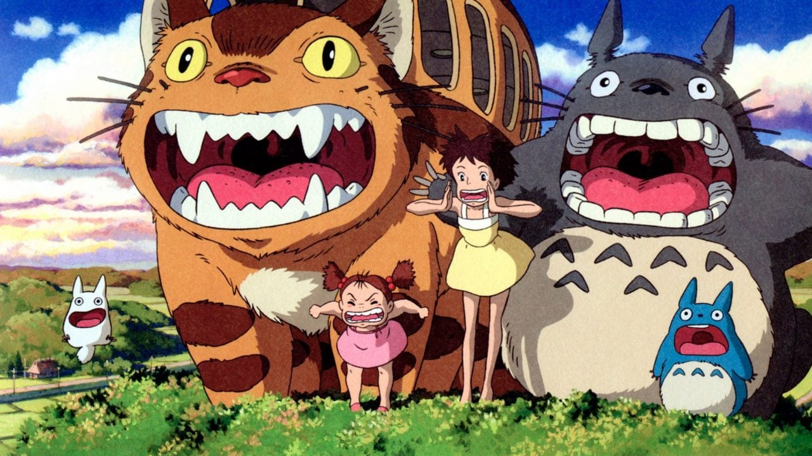
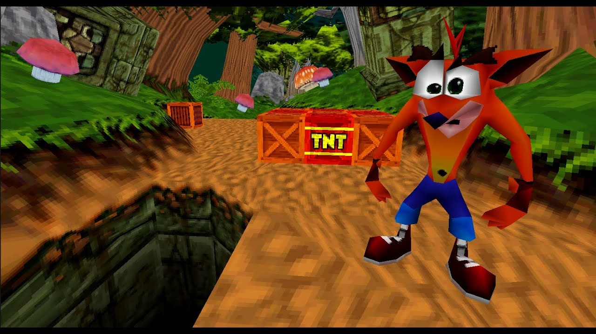
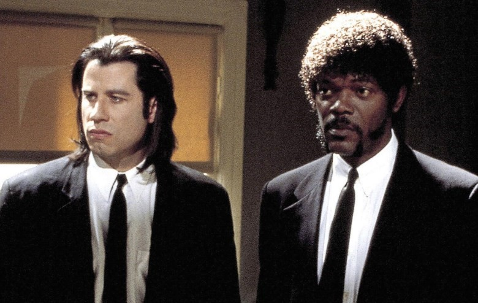
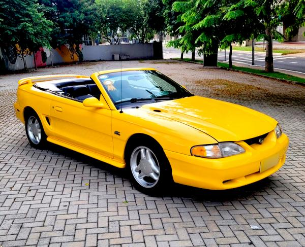
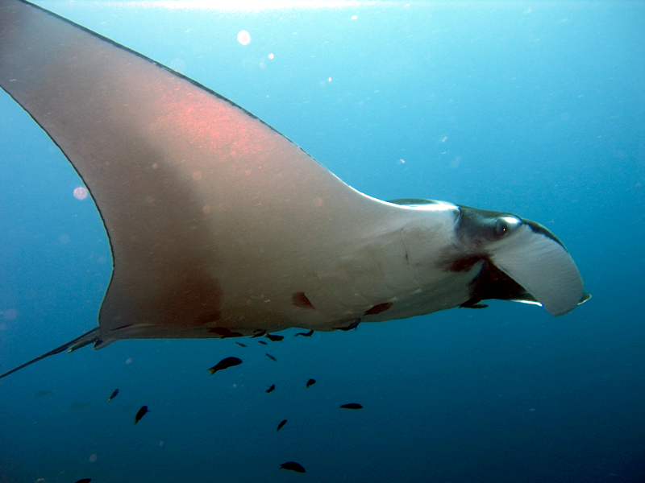
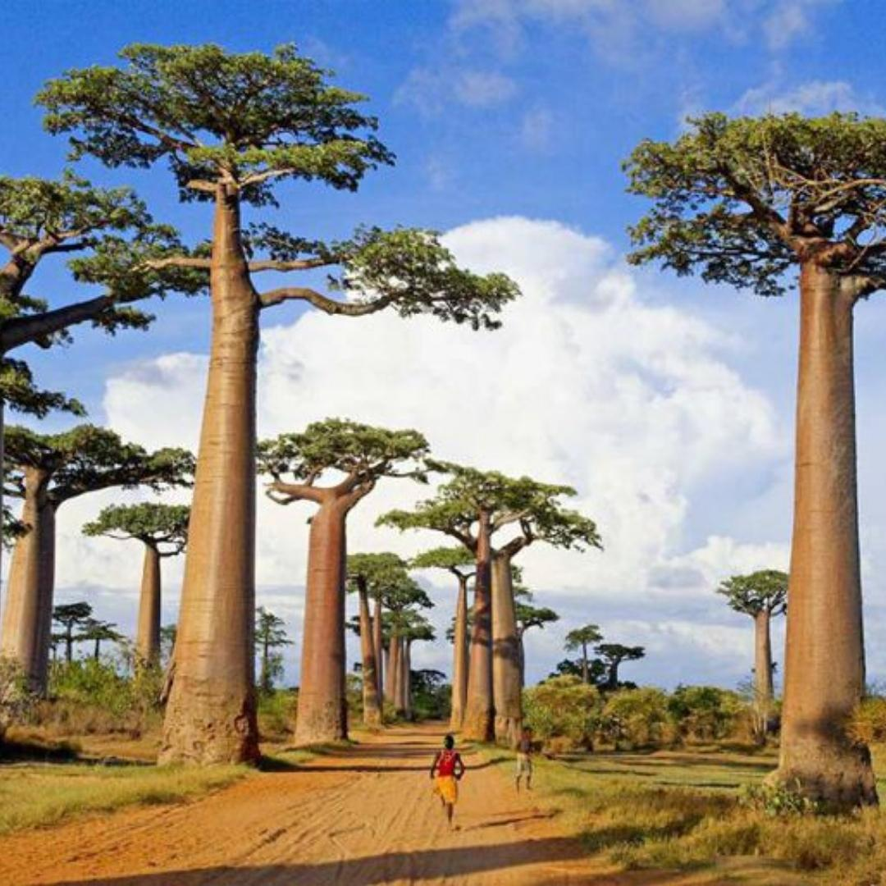

Totoro

Totoro e demais personagens.
Crash

Crash Bandicoot de Playstation 1.
Pulp Fiction

Os personagens Vincent Vega e Jules Winnfield, respectivamente.
Atlas Geográfico
 Mapa-mundi.
Mapa-mundi.
Mustang

Fotografia de um Mustang.
Jamanta

Arráia nadando.
Baoba

Baobás inseridos em seu bioma natural.
Botafogo
Sebástian Abreu.